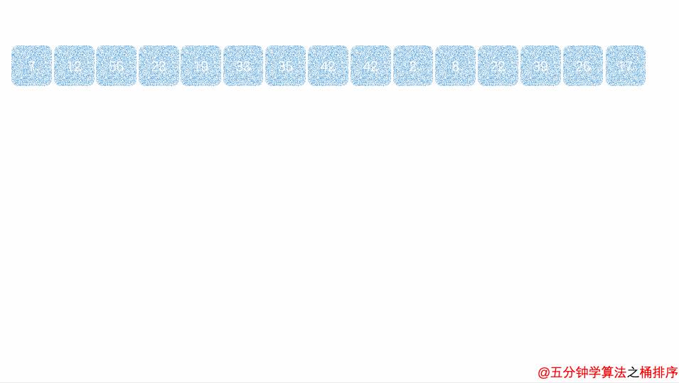

概览
《忆排序 面试我最强》 马老师
选泡插，
快归堆希统计基① ，
恩方② 恩老③ 恩一三④ ，
对恩加K⑤ 恩乘K⑥ ，
不稳稳稳不稳稳，
不稳不稳稳稳稳⑦ ！
释义：
① 选（选择排序）一个大炮（冒泡排序）插（插入排序）他一下，做统（桶排序）计（计数排序）的这个基（基数排序）友，就快（快速排序）归（归并排序）西（希尔排序）了。
② 选（选择排序）泡（冒泡排序）插（插入排序）时间复杂度为 恩方 O(n²)
③ 快（选择排序）归（归并排序）堆（堆排序）时间复杂度为 恩老 O(nlog2 n)
④ 希（希尔排序）时间复杂度为 恩一三 O(n1.3 )
⑤ 统（桶排序）计（计数排序）这俩排序时间复杂度为 恩加K O(n+k)
⑥ 基（基数排序）时间复杂度为 恩乘K O(n\ k)*
⑦ 选（选择排序）泡（冒泡排序）插（插入排序） 快（快速排序）归（归并排序）堆（堆排序）希（希尔排序）统（桶排序）计（计数排序）基（基数排序） 10种排序稳定性依次为 不稳 稳 稳 不稳 稳 不稳 不稳 稳 稳 稳
中文
英文
平均时间复杂度
最坏时间复杂度
最好时间复杂度
空间复杂度
稳定性
选择排序
Selection
O(n²) O(n²)
O(n²)
O(1) 不稳定
冒泡排序
Bubble
O(n²) O(n²)
O(n)
O(1) 稳定
插入排序 Insertion
O(n²) O(n²)
O(n)
O(1) 稳定
堆排序 Heap
O(nlog2 n) O(nlog2 n)
O(nlog2 n)
O(1) 不稳定
希尔排序
Shell
O(n1.3 ) O(n²)
O(n)
O(1) 不稳定
归并排序 Merge
O(nlog2 n) O(nlog2 n)
O(nlog2 n)
O(n) 稳定
快速排序 Quick
O(nlog2 n) O(n²)
O(nlog2 n)
O(log2 n) 不稳定
桶排序
Bucket
O(n+k) O(n²)
O(n)
O(n+k) 稳定
计数排序
Counting
O(n+k) O(n+k)
O(n+k)
O(n+k) 稳定
基数排序
Radix
O(n*k) O(n*k)
O(n*k)
O(n+k) 稳定
趣味动画 | 程序员必看的十大排序算法【力扣 LeetCode】
选择排序 最简单但最没用（最好情况和最坏情况的时间复杂度都很高，且不稳定）的排序算法。
算法步骤
从序列中找到最小元素，放到序列的起始位置
除排好序的最值外，新的序列重复步骤1，直到排序完毕
代码实现 1 2 3 4 5 6 7 8 9 10 11 12 13 14 15 16 17 18 19 20 21 22 23 24 25 26 27 28 29 30 31 32 33 34 35 36 37 38 39 40 41 42 43 44 import java.util.Arrays;public class SelectionSort public static void main (String[] args) int [] arr = {3 , 44 , 38 , 5 , 47 , 15 , 36 , 26 , 27 , 2 , 46 , 4 , 19 , 50 , 48 }; sort(arr); System.out.println(Arrays.toString(arr)); } public static void sort (int [] arr) for (int i = 0 ; i < arr.length - 1 ; i++) { int minPos = findMinPos(arr, i); SortUtils.swap(arr, i, minPos); } } private static int findMinPos (int [] arr, int start) int minPos = start; for (int i = start + 1 ; i < arr.length; i++) { minPos = arr[minPos] > arr[i] ? i : minPos; } return minPos; } }
优化项 在未排序的序列中同时找到两端元素（最小、最大），分别放于序列的起始、末尾。由此，可使外层遍历减半。
代码实现 1 2 3 4 5 6 7 8 9 10 11 12 13 14 15 16 17 18 19 20 21 22 23 24 25 26 27 28 29 30 31 32 33 34 35 36 37 38 39 40 41 42 43 44 45 46 47 48 49 50 51 52 53 54 55 56 57 58 59 60 61 62 63 64 65 66 67 68 69 70 71 72 73 74 import java.util.Arrays;public class SelectionSort2 public static void main (String[] args) int [] arr = {3 , 44 , 38 , 5 , 47 , 15 , 36 , 26 , 27 , 2 , 46 , 4 , 19 , 50 , 48 }; sort(arr); System.out.println(Arrays.toString(arr)); } public static void sort (int [] arr) for (int i = 0 ; i < arr.length / 2 ; i++) { int start = i; int end = arr.length - i - 1 ; int [] sidesPos = findSidesPos(arr, start, end); if (start == sidesPos[0 ] && end == sidesPos[1 ]) { continue ; } else if (end == sidesPos[0 ] && start == sidesPos[1 ]) { SortUtils.swap(arr, start, end); } else if (start == sidesPos[1 ]) { SortUtils.swap(arr, end, sidesPos[1 ]); SortUtils.swap(arr, start, sidesPos[0 ]); } else { SortUtils.swap(arr, start, sidesPos[0 ]); SortUtils.swap(arr, end, sidesPos[1 ]); } } } private static int [] findSidesPos(int [] arr, int start, int end) { int [] sidesPos = {start, end}; for (int i = start; i <= end; i++) { sidesPos[0 ] = arr[sidesPos[0 ]] > arr[i] ? i : sidesPos[0 ]; sidesPos[1 ] = arr[sidesPos[1 ]] < arr[i] ? i : sidesPos[1 ]; } return sidesPos; } }
冒泡排序 算法步骤
相邻数据两两比较，将最大值排至末尾
除排好序的最值外，新的序列重复步骤1，直到排序完成
代码实现 1 2 3 4 5 6 7 8 9 10 11 12 13 14 15 16 17 18 19 20 21 22 23 24 25 26 27 28 29 30 31 import java.util.Arrays;public class BubbleSort public static void main (String[] args) int [] arr = {3 , 44 , 38 , 5 , 47 , 15 , 36 , 26 , 27 , 2 , 46 , 4 , 19 , 50 , 48 }; sort(arr); System.out.println(Arrays.toStri ng (arr) ) ; } public static void sort (int [] arr) for (int i = 0 ; i < arr.length; i++) { for (int j = 0 ; j < i; j++) { if (arr[i] < arr[j]) { SortUtils.swap(arr, i, j); } } } } }
插入排序 对于基本有序的数组是最好用的，也是稳定的，类似打扑克牌。
算法步骤
取未排序的元素依次由后向前，逐一比较，直至插入正确的顺序中
重复步骤1，直到排序完成
代码实现 1 2 3 4 5 6 7 8 9 10 11 12 13 14 15 16 17 18 19 20 21 22 23 24 25 26 27 28 29 30 import java.util.Arrays;public class InsertionSort public static void main (String[] args) int [] arr = {3 , 44 , 38 , 5 , 47 , 15 , 36 , 26 , 27 , 2 , 46 , 4 , 19 , 50 , 48 }; sort(arr); System.out.println(Arrays.toString(arr)); } public static void sort (int [] arr) for (int i = 1 ; i < arr.length; i++) { for (int j = i; j > 0 && arr[j] < arr[j - 1 ]; j--) { SortUtils.swap(arr, j, j - 1 ); } } } }
优化项 用临时变量记录标记项，去掉swap方法，顺序向后复制较大的值，找到需要插入的位置后，赋值。
较原算法减少了赋值的次数。
代码实现 1 2 3 4 5 6 7 8 9 10 11 12 13 14 15 16 17 18 19 20 21 22 23 24 25 26 27 28 29 30 31 32 33 34 35 36 37 import java.util.Arrays;public class InsertionSort2 public static void main (String[] args) int [] arr = {3 , 44 , 38 , 5 , 47 , 15 , 36 , 26 , 27 , 2 , 46 , 4 , 19 , 50 , 48 }; sort(arr); System.out.println(Arrays.toString(arr)); } public static void sort (int [] arr) for (int i = 1 ; i < arr.length; i++) { int cur = arr[i]; int j = i - 1 ; for (; j >= 0 && cur < arr[j]; j--) { arr[j + 1 ] = arr[j]; } arr[j + 1 ] = cur; } } }
选泡插（三种简单排序）对比
希尔排序
From 1959, Design By Shell
改进的插入排序：
在间隔大的时候，移动的次数少。
在间隔小的时候，移动的距离短。
因为跳着排，所以不稳定，所以不常用。
算法步骤
先给定一个间隔（gap），按指定间隔使用插入排序完成子集的排序
缩小间隔，重复步骤1
直到间隔缩小至1时，进行最后一轮插入排序，完成排序
代码实现 1 2 3 4 5 6 7 8 9 10 11 12 13 14 15 16 17 18 19 20 21 22 23 24 25 26 27 28 29 30 31 32 33 34 35 36 37 import java.util.Arrays;public class ShellSort public static void main (String[] args) int [] arr = {3 , 44 , 38 , 5 , 47 , 15 , 36 , 26 , 27 , 2 , 46 , 4 , 19 , 50 , 48 }; sort(arr); System.out.println(Arrays.toString(arr)); } public static void sort (int [] arr) for (int gap = arr.length >> 1 ; gap > 0 ; gap /= 2 ) { for (int i = gap; i < arr.length; i++) { int cur = arr[i]; int j = i - gap; for (; j >= 0 && cur < arr[j]; j -= gap) { arr[j + gap] = arr[j]; } arr[j + gap] = cur; } } } }
优化项 采用Knuth序列优化gap取值
Knuth序列 代码实现 1 2 3 4 5 6 7 8 9 10 11 12 13 14 15 16 17 18 19 20 21 22 23 24 25 public static void sort (int [] arr) int h = 1 ; while (h <= arr.length / 3 ) { h = h * 3 + 1 ; } for (int gap = h; gap > 0 ; gap = (gap - 1 ) / 3 ) { for (int i = gap; i < arr.length; i++) { int cur = arr[i]; int j = i - gap; for (; j >= 0 && cur < arr[j]; j -= gap) { arr[j + gap] = arr[j]; } arr[j + gap] = cur; } } }
归并排序 Java对象排序算法：Tim Sort（改进的归并排序）
算法步骤
代码实现 1 2 3 4 5 6 7 8 9 10 11 12 13 14 15 16 17 18 19 20 21 22 23 24 25 26 27 28 29 30 31 32 33 34 35 36 37 38 39 40 41 42 43 44 45 46 47 48 49 50 51 52 53 54 55 56 57 58 59 60 61 62 63 64 65 66 67 68 69 70 71 72 73 public class MergeSort public static void main (String[] args) int [] arr = {3 , 44 , 38 , 5 , 47 , 15 , 36 , 26 , 27 , 2 , 46 , 4 , 19 , 50 , 48 }; sort(arr, 0 , arr.length - 1 ); System.out.println(Arrays.toString(arr)); } public static void sort (int [] arr, int start, int end) if (start == end) { return ; } int mid = start + (end - start) / 2 ; sort(arr, start, mid); sort(arr, mid + 1 , end); merge(arr, start, end); } public static void merge (int [] arr, int start, int end) int mid = start + (end - start) / 2 ; int [] tmp = new int [end - start + 1 ]; int i = start; int j = mid + 1 ; int k = 0 ; while (i <= mid && j <= end) { tmp[k++] = arr[i] <= arr[j] ? arr[i++] : arr[j++]; } while (i <= mid) { tmp[k++] = arr[i++]; } while (j <= end) { tmp[k++] = arr[j++]; } for (int value : tmp) { arr[start++] = value; } } }
Java对象排序——TimSort多路归并排序 对象排序一般要求稳定，1.8以后使用 java.util.TimSort<T> 进行对象排序。
TimSort：多路归并排序。
最小块使用binarySort（插入排序+二分查找位置），整体使用mergeSort两两归并。
快速排序 算法步骤
选择一个数 pivot，将序列分为两段，<= pivot 放第一段，> pivot 放第二段
对第一段、第二段递归执行步骤1
代码实现 1 2 3 4 5 6 7 8 9 10 11 12 13 14 15 16 17 18 19 20 21 22 23 24 25 26 27 28 29 30 31 32 33 34 35 36 37 38 39 40 41 42 43 44 45 46 47 48 49 50 51 52 53 54 55 56 57 58 59 60 61 62 63 64 65 66 67 68 69 import java.util.Arrays;public class QuickSort public static void main (String[] args) int [] arr = {3 , 44 , 38 , 5 , 47 , 15 , 36 , 26 , 27 , 2 , 46 , 4 , 19 , 50 , 48 }; sort(arr, 0 , arr.length - 1 ); System.out.println(Arrays.toString(arr)); } public static void sort (int [] arr, int start, int end) if (start >= end) { return ; } int pivotIndex = partition(arr, start, end); sort(arr, start, pivotIndex - 1 ); sort(arr, pivotIndex + 1 , end); } private static int partition (int [] arr, int start, int end) int left = start; int right = end - 1 ; while (left < right) { while (left <= right && arr[left] <= arr[end]) { left++; } while (left <= right && arr[right] > arr[end]) { right--; } if (left < right) { SortUtils.swap(arr, left, right); } } if (arr[left] > arr[end]) { SortUtils.swap(arr, left, end); } return left; } }
优化项 双轴快排 选取两个数 pivot1, pivot2，将序列分为三段，< pivot1 放第一段，pivot1 <= && <= pivot2 放第二段，> pivot2 放第三段。
Arrays.sort(int[])
计数排序 非比较排序，桶排序 思想的一种。
适用于：数据量较大，但取值范围较小的情况。
例如：
某大型企业数万名员工的年龄排序
如何快速得知高考名次
算法步骤
代码实现 1 2 3 4 5 6 7 8 9 10 11 12 13 14 15 16 17 18 19 20 21 22 23 24 25 26 27 28 29 30 31 32 33 34 35 36 37 38 39 40 41 42 43 44 45 import java.util.Arrays;public class CountingSort public static void main (String[] args) int [] arr = {2 , 3 , 8 , 7 , 1 , 2 , 2 , 2 , 7 , 3 , 9 , 8 , 2 , 1 , 4 , 2 , 4 , 6 , 9 , 2 }; sort(arr, 9 ); System.out.println(Arrays.toString(arr)); } public static void sort (int [] arr, int maxNum) int [] count = new int [maxNum + 1 ]; for (int i = 0 ; i < arr.length; i++) { count[arr[i]]++; } for (int i = 1 ; i < count.length; i++) { count[i] = count[i - 1 ] + count[i]; } int [] arrBack = new int [arr.length]; System.arraycopy(arr, 0 , arrBack, 0 , arr.length); for (int i = arrBack.length - 1 ; i >= 0 ; i--) { arr[--count[arrBack[i]]] = arrBack[i]; } } }
基数排序
非比较排序，桶排序 思想的一种，本质上是一种多关键字排序。
有低位优先（LSD：Least Significant Digit First）和高位优先（MSD：Most Significant Digit First）两种。其中，LSD的每次循环都是一次计数排序；MSD则是利用递归的一种分治思想。
使用场景：字符串排序，取最长的字符串的长度作为digit；每个字符作为一位。
算法步骤
代码实现 1 2 3 4 5 6 7 8 9 10 11 12 13 14 15 16 17 18 19 20 21 22 23 24 25 26 27 28 29 30 31 32 33 34 35 36 37 38 39 40 41 42 43 44 45 46 47 48 49 import java.util.Arrays;public class RadixSort public static void main (String[] args) int [] arr = {3 , 44 , 38 , 5 , 47 , 15 , 36 , 26 , 27 , 2 , 46 , 4 , 19 , 50 , 48 }; sort(arr, 2 ); System.out.println(Arrays.toString(arr)); } public static void sort (int [] arr, int digit) int [] count = new int [10 ]; for (int k = 0 ; k < digit; k++) { Arrays.fill(count, 0 ); int division = (int ) Math.pow(10 , k); for (int i = 0 ; i < arr.length; i++) { count[arr[i] / division % 10 ]++; } for (int i = 1 ; i < count.length; i++) { count[i] = count[i - 1 ] + count[i]; } int [] arrBack = new int [arr.length]; System.arraycopy(arr, 0 , arrBack, 0 , arr.length); for (int i = arrBack.length - 1 ; i >= 0 ; i--) { arr[--count[arrBack[i] / division % 10 ]] = arrBack[i]; } } } }
桶排序
不太重要，普通情况不常用。
特殊情况较常用，且计数排序 > 基数排序
桶内排序存在时间换空间，空间换时间的取舍问题，无法做到最好。
算法步骤 
堆排序 算法步骤
代码实现